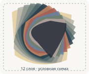

Примечание: иллюстрация ниже создана для объяснения принципа, не является копией оригинальной работы. Конкретный набор художника по исходной ссылке может отличаться.

Учебная схема
Материалы для работы в аналогичной технике
Ингредиенты
- 12 отдельных листов Mylar или плотного картона
- Основа: холст или разрешённый щит
- Не менее 12 подготовленных цветовых масок
- Краски согласованной палитры
- Съёмная фиксация и метки совмещения
Инструменты
- Графический редактор для цветоделения
- Принтер либо режущий плоттер
- Макетный нож и защитный коврик (взрослым)
- Материалы для очистки согласно паспорту краски
- СИЗ и оборудованная площадка — если используется аэрозоль
Быстро и подробно
1
Разделить исходник на 12 цветовых масок
2
Добавить мостики и три контрольных метки
3
Вырезать 12 самостоятельных трафаретов
4
Провести пробную регистрацию на основе
5
Наносить цвет за цветом после подсыхания
6
Снять последний шаблон, оценить совмещение
Неизвестно, в каком порядке художник наносил цвета в оригинале. Здесь показана учебная схема повторения технологии.